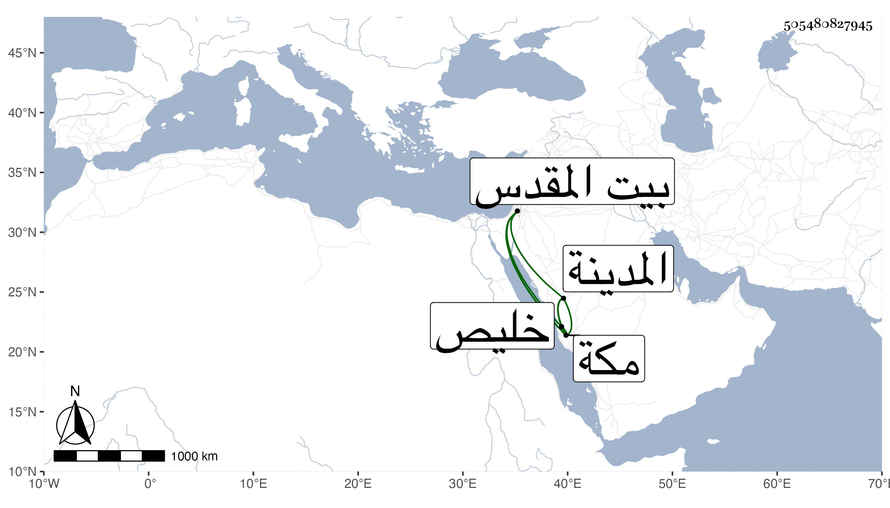

0902Sakhawi.DawLamic.ITO20230111-ara1.EIS1600.505480827945
Biography ID: 505480827945
209
أبو بكر بن البدر محمد بن أبي بكر بن الحلاوي الماضي أبوه . مات ببيت المقدس في شوال أو رمضان سنة تسع وسبعين حين توجهه لمكة من المدينة بعد الزيارة عن نحو أربعين سنة في حياة أبويه عوضهم الله الجنة ورأيت ابن فهد أرخه في جمادى الثانية منها بخليص وحمل لمكة فدفن بمعلاتها وهذا هو المعتمد وعندي فيمن سمع مجلس صوم عاشوراء للمنذر بن علي النورين الأبودري وابن المحوجب وشعبان العسقلاني أبو بكر بن القاضي شمس الدين محمد بن أبي بكر الحلاوي وكذا فيمن سمع البخاري بالظاهرية وكأنه هذا وأخطأت في تلقيب أبيه .
